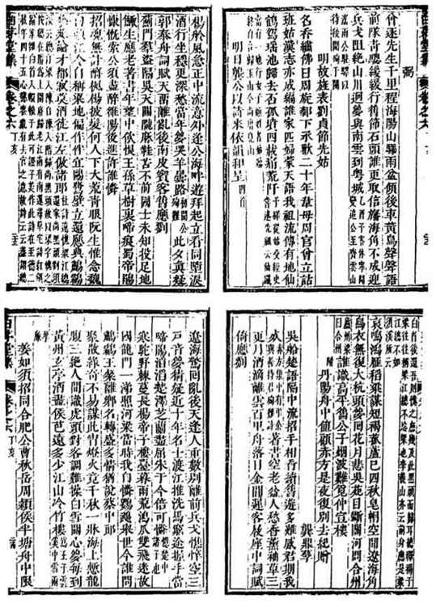
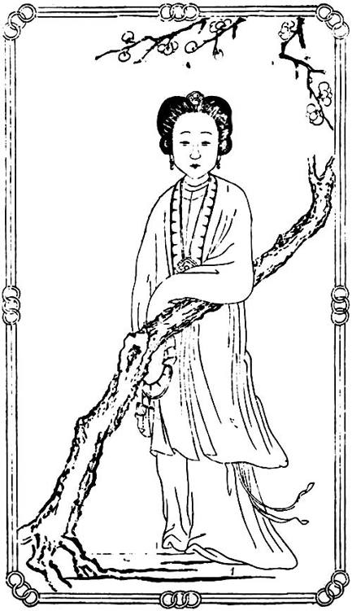

随后的事情就不那么轻松了，龚鼎孳需要面临人生的分水岭。
他是甲申年（1644）二月获释，出狱刚一个月，就遭遇天崩地解的大事：李自成攻克北京，崇祯皇帝命殒煤山。
被围困城中的龚鼎孳，和其他千名明朝京官一样，目睹并亲身经历了这场巨变。他在事件中的行止，《贰臣传》仅录一句：
鼎孳从贼，受伪直指使职，巡视北城。[25]
历史中的个人遭际，往往被如此简化。因为较诸国家陵谷之变，个人渺如芥豆、微不足道。龚鼎孳并非无名之辈，但是当我们试图搜集他在李自成占领北京四十余天之中的踪迹时，却发现寥寥无几，可凭可信的更近乎为零。
现在，我们所以还能在那草草一语之外，为龚鼎孳城陷之后的日子，补上一些重要细节，得感谢同时代一位古人、龚的朋友顾景星。他在康熙四年，读了龚鼎孳怀念方以智的一首诗，百感交集，和以诗篇的同时，写有长序，记下自己所知道的事情。我们完整抄在下面：
当岁癸未（1643），公建言忤政府，致下廷尉。烈皇帝降《哀痛诏》，始出公于系，犹不免戍谴。朝夕冀见帝陈国是，仓皇难作不可为矣，江左流言絓公。又四年，丁亥遇公丹阳舟中，执手呜咽。是夕匆匆别去，明年秋，拏舟送公梁谿，比舷结缆，浃旬不忍去。一日始旦，公衣短衫襦，过予舟，出袖中书，大如车轴，皆奏疏及所拟上书，述遭难壮（状）甚悉。公于三月十九日闻变，二十日即亡走。史官方以智为贼得，劫令索公。胁降不可，抵金不得，五木交下无完肤，然后舍。公曰：“是区区者，吾未尝以示人也。”而顾独示予，毋亦谓斯言也不可使不知吾者知，不可使知吾者不知邪！又十五年，壬寅遇药地禅师于清江，言与公合。药师者，即以智也。自岭峤跳归得，付曹洞法矣。又三年，乙巳从卢大恭所见公忆以智诗并序，嗟呼，今如不言，后世何述！灯下步原韵四章，兼怀药师。[26]
主要内容是讲丁亥年（顺治四年）与龚鼎孳意外邂逅于丹阳，而听龚鼎孳亲口讲述自己在北京城破后的遭遇。其大概经过是：三月十九城破，二十日龚鼎孳逃亡，潜于某处。闯军先抓到了方以智，方知道龚下落，又供出龚，龚由此被逮。逼降不果，勒金又无，遂遭严刑而体无完肤，然后放了他。
重要的是，顾景星还对龚的自述做了求证——又过十五年，康熙元年，顾见到另一当事人方以智，就事情经过询问方本人，“言与公合”，龚、方说法完全一致。
顾的为人颇能保证这材料的可信。他入清后屡征不仕，以遗民终老，事迹可在《明遗民录》找到：
顺治庚子，征天下山林隐佚之士，大吏强之，不起。康熙戊午，又以博学鸿儒征，有司强迫就道，辞不赴。杜门息影，翛然遗世。[27]
他虽是龚鼎孳的朋友，但依其人品，我们没有道理怀疑他会因为褊私而说谎。而且我们看到，他不光待朋友有情有义，对事实也很负责、谨慎，花了十五年时间来求证，然后才记于文字。由于他的认真，我们终于握有龚鼎孳在北京国难期间的一条确切线索，这也是迄今仅有的完全没有疑问的材料。从中我们知道，龚鼎孳当时从家中逃亡，躲藏在外，不想投降，而且遭遇悲惨。

《白茅堂集》顾赤方龚鼎孳往还诗
顺治四年，龚鼎孳与老友顾景星在丹阳舟中意外相逢，互赠诗篇，其中都涉及龚鼎孳曾经殉难事。

顾媚像
明末金陵有“ 秦淮八艳”，顾媚既列其中，且是最树大招风的一位。嫁龚鼎孳后，人称横波夫人，龚则称之善持君。
当然，方以智提供的旁证，严格说只到龚鼎孳被闯军抓获为止。之后的事情，即龚鼎孳所述他遭到拷掠然后释放的情节，已经没有目击者。野史所记与他自述相反，说他接受了“伪职”；《贰臣传》持相同说法，却没有指出材料来源，应该是以野史为本。
说到明末的野史，因为出版和商品经济相当发达，许多情形与现代已很相似，凡社会关注度高、因而有明显牟利空间的重大事件，编辑家和写手的反应十分敏捷，第一时间搜罗撰述，编成纪实时闻，售而获利。这当中，有几分事实，又有几分得之耳食、捕风捉影，乃至生造臆测，实际很难搞清。尤其甲申国变这种塌天大事，真真假假的传闻，更无从断之。举个例子，后被阮大铖借题杀掉的周镳，便是“以南身记北事”的一位。他当时编了两本书，一名《燕中纪事》，一名《国变录》，被失睦的亲戚告发为“私刻”[28]。这类根本不在现场，却言之凿凿、有如亲历的叙事，曾让杨士聪忍无可忍。他在北京，也被闯军逮捕、羁押，但因与闯军某将交好，未受拷打而脱身南来。到了南方，他发现，上述经历根本无人相信，不由分说一致认他必定身降，有人说其所授为“伪户政府少堂”，甚至“亲见门粘钦授官职”[29]，好像千里之外的人们，竟比当事人更了解事实。杨士聪觉得岂有此理，于是写了一本《甲申核真略》，专讲真相核实的问题：
称核真者，以坊刻之讹，故加核也。坊刻类以南身记北事，耳以传耳，转相舛错，甚至风马牛不相及者，其不真也固宜。[30]
而除了起于各种原因的道听途说，对事实的轻率以及急欲落井下石的心态，还受到道德义愤的有力怂恿：
自南中欲锢北来诸臣，遂倡为刑辱之说，计将一网打尽。坊刻竖儒，未喻厥旨，乃谬引刑不上大夫之说，横生巧诋，何比拟之非伦也。[31]
这在那时代很典型，全社会以“烈夫贞妇”为尚，但闻某人非是，立刻争先恐后齐声唾弃，以示自己和“烈夫贞妇”保持一致，至于实际究竟发生了什么，反而不遑乃至无意加以澄清。所以杨士聪表示：“余偶未罹贼刑，兹于受刑诸臣，悉为明著于篇，以质公论。”他自己未曾受刑，但了解那些受刑者的惨毒之状，觉得南中对他们的堂而皇之的道德批判十分不公，要把自己所知的真实情形明明白白写出来，让大家评判受刑者的过失究竟如何。
城破后，龚鼎孳没有主动归顺，他潜逃然后被逮、受刑，这一部分事实我们已可确定。关键是之后情节不明，当时，屈打成降的例子既不少，可能性也相当大。但我们究竟不能因而推之，凡遭刑鞫者最后都吃打不过而投降、接受“伪职”。
从他多年如鲠在喉，终借与至交重逢之机郑重白冤来看，我们或许应该慎重其事。当时，时过境迁，他曾降闯的说法早就木已成舟，无论其辩白对顾景星有无作用，至多只能影响某一个人，丝毫无改整个社会和历史的评价。他应明知于此，但仍不放弃对顾景星孜孜剖陈，这几乎无谓的举动，唯一的解释是心灵需要，即面对一位真正知己，一位可托心腹的至交，他觉得必须示以肺腑，把真实的自己展示给他，此亦顾景星所感受的：“不可使不知吾者知，不可使知吾者不知。”
况且，这展示只与其中一个事实有关，无助于整个洗刷他的污点：
本朝顺治元年五月，睿亲王多尔衮定京师，鼎孳迎降，授吏科右给事中，寻改礼科。二年九月，迁太常寺少卿。[32]
以上记述出乎清朝官方，不复可疑；总之，他是做了明朝的叛臣——即便未降于闯，亦终降于清。但我们体会，即便是普通罪犯，对所犯之罪、所该当的罪名无从推卸，但对那些确非其所为而强加、阑入的指控，恐怕也将大为不甘，断不会因有罪之身而乐意把一切全都揽在身上。
从这一点来说，我们对于龚鼎孳在崇祯自尽至多尔衮入城之间四十余天的情形，以存疑为妥。我们既不轻信他的表白，也不一口咬定他必定“从贼”。无论哪一种，我们都还不能证明。而其间留给我们的困惑，还不仅于此。例如，闯军溃走后，北京约有半月左右真空状态，大批自城破前困囿在此的南籍官员乘机逃离。工部员外郎赵士锦所著《北归记》，即为上述情形之亲身实录。余如杨士聪、方以智、陈名夏、周钟、光时亨等等，都是此时南还。那么，龚鼎孳何不采取相同行动，却留在北京“迎降”？此有不可解处。以当时来论，北为乱邦、南方尚安，一目了然，而避危趋安应是合理、本能之选，为什么龚鼎孳却反向而择？对此，他的弟子严正矩有个说法：“寇胁从不屈，夹拷惨毒，胫骨俱折，未遂南归。”[33]说他伤势严重，根本不胜远途。这解释倒很合理，但假使果如所说，就又牵出另一点，即他伤到这个样子——胫骨是小腿，俱折则两腿都被打断——怎么出来为闯军做事？然而此说既孤，又出其弟子，我们无法采信。
无论如何，未死而滞留北京的龚鼎孳，就此开始了他的“贰臣生涯”。